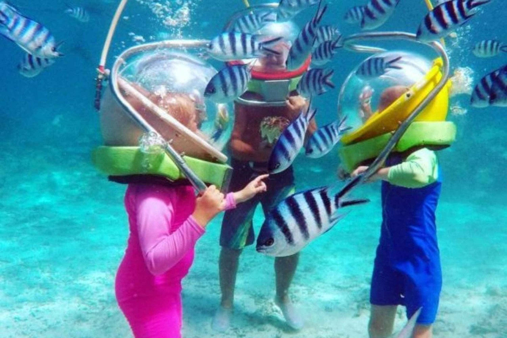
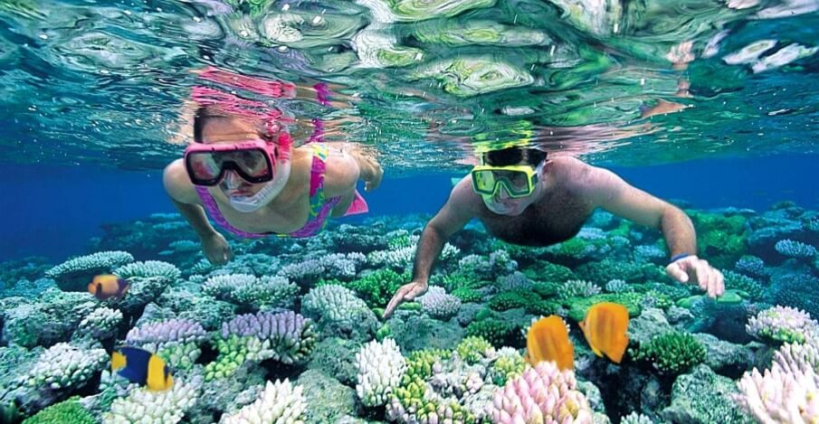
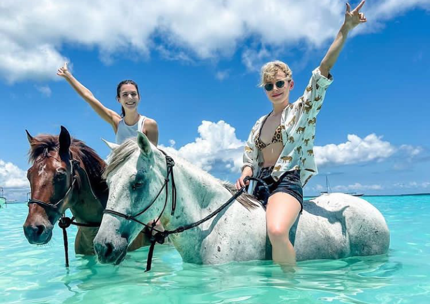
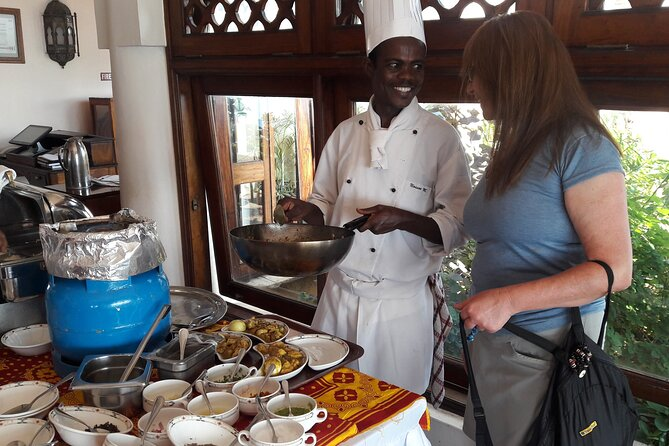
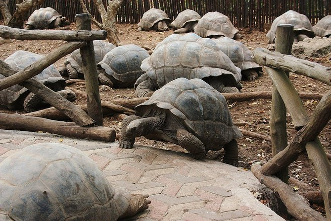
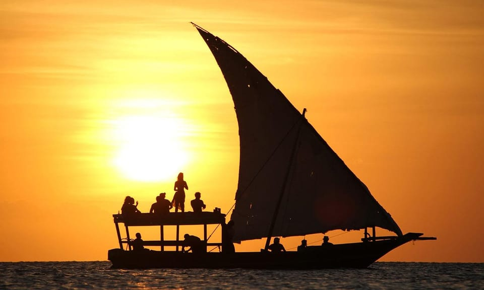

Our Signature Zanzibar Tours
Hand‑picked experiences for the curious traveler
Stone Town Heritage Walk
Uncover the soul of Stone Town with a local historian. Visit the old fort, Sultan’s palace, and bustling markets.
Book Now →
Seawalking Adventure
Walk on the ocean floor with a special helmet. See tropical fish and coral up close — safe for all ages and non‑swimmers.
Book Now →
Snorkeling at Mnemba Atoll
Snorkel in crystal‑clear waters teeming with marine life. Includes gear, guide, and refreshments. Perfect for families.
Book Now →
Beach Horse Riding
Ride along pristine white sands, through palm groves, and into the Indian Ocean sunset. Professional guides and gentle horses.
Book Now →
Spice & Swahili Cooking Class
Explore a working spice farm, taste exotic fruits, and cook a traditional Swahili feast.
Book Now →
Prison Island & Giant Tortoises
Meet the famous Aldabra tortoises, snorkel crystal waters, and learn the island’s history.
Book Now →
Traditional Dhow Sunset Cruise
Sail into the Indian Ocean sunset aboard a handcrafted dhow. A magical end to any day.
Book Now →Why GoZanzibar?
Local Experts
Born & raised in Zanzibar – we share hidden gems and authentic stories.
Sustainable Travel
We support local communities and protect the environment with eco‑conscious tours.
Flexible & Private
Custom itineraries, private guides, and last‑minute changes? No problem.
5‑Star Experiences
Rated excellent by travelers worldwide. Your adventure, our promise.